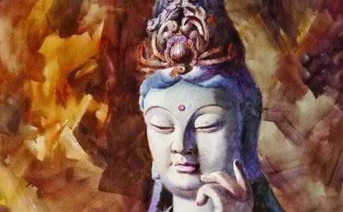

一日，女儿要画画，问我画什么。其时正在看书的我抬头看见厅台上的
一本书被我读得差不多了，女儿还在安静地低头作画。这丫头极喜跳舞和画画，平时谈论理想时，她总自信满满地要当舞蹈家和画家。两者都是需要极大心力才可能有所成就的职业，她怎么可以鱼和熊掌兼而得之？即便如此，我们还是顺其自然地满足着孩子的喜好。女儿倒也用心，寻常眼里的风景都能入了她的画，依
女儿显然费了一番功夫。
“菩萨不好画吗？”我问。
“妈妈，菩萨的眼睛我画不好啊。”女儿搁下画笔，手托腮，求助似的看着观世音菩萨像。
“菩萨的眼睛多漂亮呀，来，看着我的眼睛，嗯，就这样。”我边说边作一种低眉慈悲的表情给女儿看。
“哈哈……”我东施效颦的举动惹来一阵大笑。
低眉难画，更难作 突然
我认识的一家三口，新近发生的事情真是让人唏嘘。
夏日午睡之后，
听到儿子的哭声，妈妈的书看不下去了，冲出房间对老公兴师问罪。两个人先是怒目相向，后又唇枪舌剑，很快升级为拳打脚踢。
冲动是魔鬼，不知道打在了哪里，几番回合之后，突然妻子尖叫着倒在地上动弹不得了。
待医院的救护车来，大家七手八脚把伤者送进医院，急乱中发现不见了丈夫……
七尺男儿，竟自跳了楼！据说是凶悍的妻弟扬言等把姐姐安妥好了，回头再收拾他……他因此害怕了？
如若当初，他们当中哪怕
悲剧既成事实，任何的假设于当事人都已没有意义，充其量只能作前车之覆，给后人一点警醒和教训了。
上善若水，至慈低眉 《
《太平广记》卷一七四引《谈薮》谓：“薛道衡游钟山开善寺，谓小僧曰：‘金刚何为怒目？菩萨何为低眉？’答曰：‘金刚怒目，所以降服四魔；菩萨低眉，所以慈悲
低眉不只是一种表情，一种姿态，更是一种生命的呈现。
老家四奶奶就是一位现实
因为没脾气，四爷总不拿她当人看。我们两家只一墙之隔，曾有段时间，天雨墙坏，留个大豁子，两家几乎成了一家，因此我对四奶奶的低眉忍辱印象很深。
记得一天晚上，四爷从外面喝酒回来，杂七杂八的恶言恶语豆沫子似的朝四奶奶乱飞。四奶奶一句话都不反驳，给四爷把茶水倒上，仍低头拾掇自己的豆子。有句话叫得寸进尺，四爷的牛脾气在四奶奶的隐忍下更加大发了。后来不知道为啥他就照着四奶奶的后背猛踢了一脚，直踢得四奶奶一头栽到地上多久都没站起来。
母亲怕四爷会继续找四奶奶的麻烦，就把她搀到我们家里了。晚上四奶奶回去，四爷不给开门，她在窗下听四爷躺在床上还骂骂咧咧的，只得折身又回来。
那晚四奶奶是睡在我家的，和我一个床。夜里起来解手的时候，我见四奶奶已经起床了，堂屋里的灯亮着，她一个人在我家的
后来我把这个事情告诉了母亲，又从母亲那里听到四奶奶信佛，每天早起都要磕三百个头。
当时什么都不懂，听母亲如此说，我还讥笑四奶奶
几年前，四奶奶坐在她家佛像前安然去世了。其时我们还在私下里议论，她一辈子吃穿用度没一样捞着个好，就死得还算不错，没受什么罪。可好死不如赖活着呀，大家还都替她惋惜呢。
直到后来自己也
对于志在出离轮回的佛子，生命是供我们用来享受的吗？当然不是。
佛在《
《维摩诘经》记载了为什么
此土菩萨，于诸众生，大悲坚固，诚如所言。然其一世
所以菩萨修
如此看来，四奶奶的忍气吞声，在世人眼里，或许是一种软弱怯懦，遭人鄙夷；但作为一名佛子，她的低眉，何尝不是忍辱的莲池里开出的一朵优波罗花？
这朵花一旦修成，自可化莲为舟，